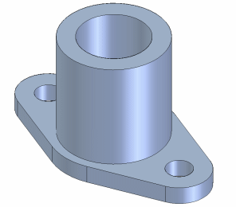

This tutorial demonstrates how to use variables in Solid Edge. It shows how to define design variables that control dimensions in a part model and how to define formulas that relate design variables to one another.
This is an intermediate tutorial. You might find it easier to follow if you first complete the Introduction to Part Modeling tutorial.
Estimated time to complete: 30 minutes
